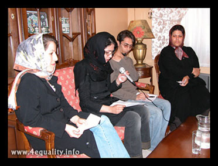
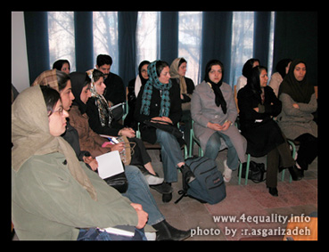
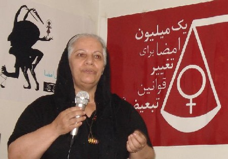
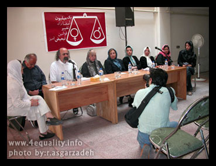

|
|

گزارش تصویری
کمپین از نگاه دوربین/ سال اول
تغییر برای برابری
پنج شنبه7 شهریور 1387
گزارش تصویری سال اول کمپین نگاهی است به تجربه ای که با کمترین امکانات توانست برابرخواهی را به نقاط مختلف کشور گسترش دهد. عکس های این گزارش حاصل تلاش راحله عسگری زاده، آیدا سعادت،پروین اردلان، و ... دیگر دوستانی است که تلاش کرده اند لحظه لحظه این حرکت جمعی را ثبت و منتشر کنند.
5شهریور 1386: كمپين يك ميليون امضا براي تغيير قوانين تبعيض آميز آغاز به كار كرد

13 آبان: همدان هم به كمپين پيوست
23 آبان1385: کمپین یکمیلیون امضا در کرج
29 آبان:ارونداتی روی، به کمپین " یک میلیون امضا" پیوست
11 آذر1385: كمپين يك مليون امضا به يزد هم رسيد
23 آذر1385 : اولين نشست سراسري دست اندركاران كمپين يك ميليون امضا

23 آذر ماه 1385: اولین بازداشت؛ جمع آوری امضا در مترو
8 دی1385: کمپین یک میلیون امضا به کرمانشاه رسیدد

20 دی 1385: بازداشت نسیم سرابندی و فاطمه دهدشتی به جرم جمع آوری امضا
3 اسفند 1385 : كارگاه كمپين يك ميليون امضاء در مشهد

5 اسفند385:آغاز به کار کمیته مادران کمپین

10 اسفند1385: و بالاخره کارگاه رشت .....
18 اسفند1385 :معرفی کمپین یک میلیون امضاء درجشن روز جهانی زن در وین
24 اسفند1385:دومین نشست عمومی کمپین

7 فروردین 1386 : عید دیدنی کمپینی ها
13 فروردین 86:بازداشت پنج تن از اعضای کمپین "یک میلیون امضا"

23 فروردین 1385:نشست «جنبش زنان٬ تهديدها و مقاومت ها» در دفتر تحكيم ادوار
26 فروردین :آزادی محبوبه حسین زاده و ناهید کشاورز


6 اردیبهشت 1386 :سومین نشست عمومی کمپین :"رابطه کمپین با احزاب و جنبش های دیگر"
20 خرداد 1386 : احترام شادفر (مادر کمپینی )و همسایه او /جمع آوری امضا

22خرداد 1386:بزرگداشت 22 خرداد از سوی اعضای کمپین

27 خرداد 1386: کمپین یک میلیون امضا در نخستین کنفرانس موسسه زنان نوبل
20تیر ماه1386: بازداشت امیر یعقوبعلی
4 شهریور 1386: نمایشگاه نقاشی «همه مادران من »

6 شهریور 1386 :كنفرانس مطبوعاتي سالگرد كمپين يك ميليون امضا

8 شهریور 1386 :نشست اعضا و حامیان کمپین در نخستین سالگرد
10 شهریور 1386: یک سال پر امید با کمپین: کمپین گزارش می دهد
ادامه دارد....